DOMAIN
Public Transportation
Planning and operating transit and ADA paratransit services.
My work: paratransit districting models, FDOT transit demand study, JTA fare capping study.
Ph.D. Candidate · Industrial Engineering
I build mathematical optimization models, custom algorithms and machine learning models for public transportation, shared mobility and micro-mobility, supply chain & logistics, and airline operations, including electric garbage-truck routing and charging infrastructure planning. I have 4+ years of experience across transit, ridesourcing, airline and transportation consulting work. I am a Ph.D. candidate at the FAMU-FSU College of Engineering, Florida A&M University, advised by Dr. Yanshuo Sun.
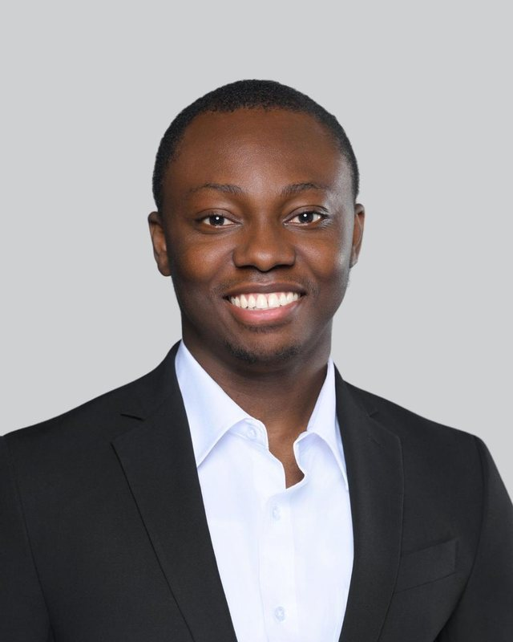
About me
I design optimization models and algorithms that help cities run their vehicle fleets better. Efficient routes and schedules mean fewer miles driven, lower operating costs and lower emissions. Well-designed service zones mean more reliable public transportation and shared-mobility services for the riders who depend on them.
Presently, I am a Ph.D. candidate in Industrial Engineering at the FAMU-FSU College of Engineering, Florida A&M University, where I work in the Transportation System Optimization (TSO) Lab advised by Professor Yanshuo Sun. My dissertation, Optimization Models for Charging Infrastructure Planning and Districting in Solid Waste Collection, uses the City of Tallahassee's waste collection service as a real-world case study. I build mixed-integer and bi-level programs, then design decomposition heuristics and column-generation algorithms that solve them at city scale.
Part of my dissertation, a bi-level model for multi-period charging infrastructure planning, is a research collaboration with Professor Zhi-Long Chen of the Robert H. Smith School of Business at the University of Maryland. I also collaborate with the University of Texas at Austin on transit demand estimation for the Florida Department of Transportation, and with the University of North Florida on fare capping research for the Jacksonville Transportation Authority.
Beyond research, I teach operations research and data engineering courses as a graduate teaching assistant, and I review papers for the TRB Annual Meeting and the BTR Conference.
Education
Expected Aug 2027
FAMU-FSU College of Engineering, Florida A&M University · GPA 4.0 / 4.0
Aug 2022 – Dec 2024
FAMU-FSU College of Engineering, Florida A&M University · GPA 4.0 / 4.0
Nov 2012 – Feb 2018
Federal University of Technology, Owerri (FUTO), Nigeria · Industrial & Production option · Second Class Upper
Research focus
I work in the Transportation System Optimization (TSO) Lab led by Dr. Yanshuo Sun, which uses integer programming, probabilistic optimization and machine learning to study transportation systems. These are the areas I contribute to, and what I have done in each.
DOMAIN
Planning and operating transit and ADA paratransit services.
My work: paratransit districting models, FDOT transit demand study, JTA fare capping study.
DOMAIN
Routing, scheduling and facility decisions for fleets that move goods and materials.
My work: routing and scheduling electric garbage trucks in municipal solid waste collection.
DOMAIN
How the structure of a road or service network shapes the best decisions on it.
My work: comparing real road-network and virtual-link models for truck routing; network-based districting formulations.
DOMAIN
Shared-ride, on-demand and micro-mobility services that pool trips or vehicles across many riders.
My work: zone design for shared-ride, door-to-door paratransit, cutting trips that cross zone boundaries.
DOMAIN
Lower-emission fleets and the infrastructure they need.
My work: electrifying garbage-truck fleets and planning charging stations over multiple years.
METHOD
Mixed-integer, bi-level and stochastic programming, with custom algorithms.
My work: decomposition heuristics and column generation solving large instances within 2% of optimal.
METHOD
Prediction and classification models that support planning decisions.
My work: airline destination recommender (AUC 0.95) and aircraft turn-time regression.
METHOD
Large operational and commercial mobility datasets.
My work: American Airlines booking and flight data; data-as-a-service mobility data for Florida transit agencies.
LabTSO Lab team · Ph.D. student since Fall 2022Group projects
Dissertation
Vehicle-based municipal services such as garbage collection and dial-a-ride paratransit face the same decisions at three levels: where to put infrastructure, how to split the service area, and how to route each vehicle. My dissertation addresses all three. The map shows the idea: trucks leave a depot, serve households in two districts, and recharge at stations along the way.
Operational
Routing and scheduling models for electric garbage trucks that use the real road network, with mid-route charging. Solved with a sequential decomposition heuristic and a column-generation approach.
Large instances within 2% of optimal, up to 90% less solve time than a commercial solver
Strategic
A bi-level mixed-integer model that decides where and when to build charging stations over multiple periods, given how trucks will be routed below. Includes a custom heuristic and an exact algorithm.
Case study: City of Tallahassee fleet transition, planned out to 2045
Tactical
Network-based integer programs that split an ADA paratransit region into zones while keeping inter-zone trips low, plus a shortest-path heuristic for large instances. Also a review of districting across municipal services.
15% cost savings; balanced zones in under 7 minutes instead of up to 3 hours
Transit data
Studying how data-as-a-service products can improve transit demand estimates for Florida agencies, and designing an "activation ratio" metric for JTA's mobile ticketing.
Airline analytics
Multi-class destination recommenders and turn-time regression models built on real American Airlines operational and booking data.
Toolkit
The optimization solvers, programming languages, data tools and research methods I use in my research and projects.
Publications
2026
Truck route optimization for electrified municipal solid waste collection: Impacts of network representation and new solution algorithms Published
Okorie, C. and Sun, Y.
Transportation Research Part E: Logistics and Transportation Review, 213, 104982
2026
Network-based formulations and solution algorithm for paratransit districting Published
Okorie, C., Chen, S., and Sun, Y.
Transportation Research Part C: Emerging Technologies, 189, 105738
2026
Bi-level optimization for multi-period charging infrastructure planning in waste collection Submitted
Okorie, C., Chen, Z.-L., and Sun, Y.
IISE Transactions
Experience
Sponsored projects & competitions
FDOT Public Transit Office · with UT Austin · Jun 2025 – present
Evaluating how commercial mobility data products can support demand estimation and service planning across Florida transit agencies.
Jacksonville Transportation Authority · with UNF · Dec 2024 – Aug 2025
Studied fare affordability, transit accessibility and ridership under fare capping in JTA's mobile ticketing system, including an activation-ratio metric that compares mobile ticketing adoption with the STAR Card.
American Airlines Advanced Analytics Challenge · Apr 2024 · Finalist
Regression analysis of delay impacts using operational and flight-level data. Presented at the FAMU-FSU Big Data Symposium.
American Airlines Advanced Analytics Challenge · May 2024
Multi-class classification models trained on real booking data, presented at the FAMU-FSU Big Data Symposium.
Talks
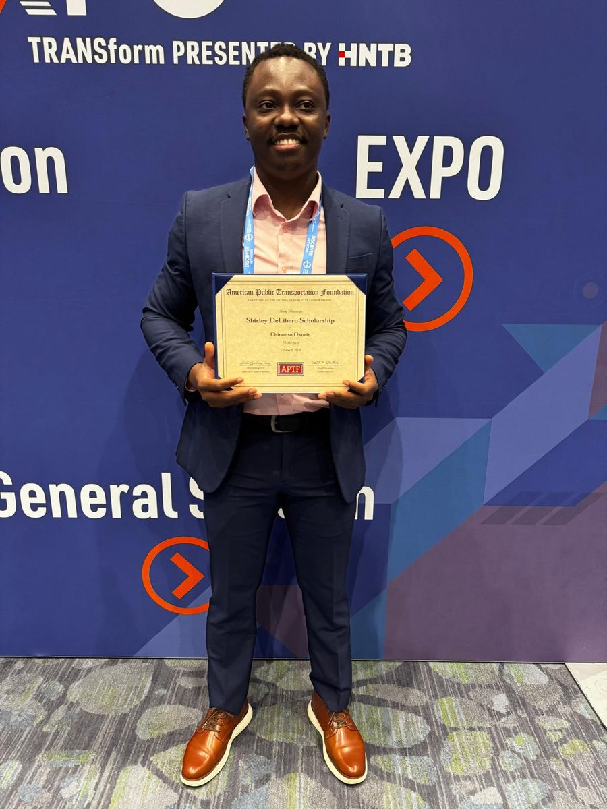
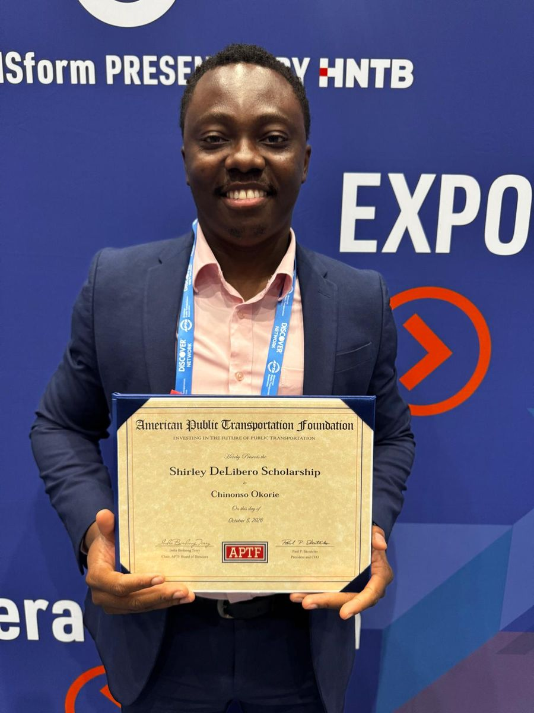
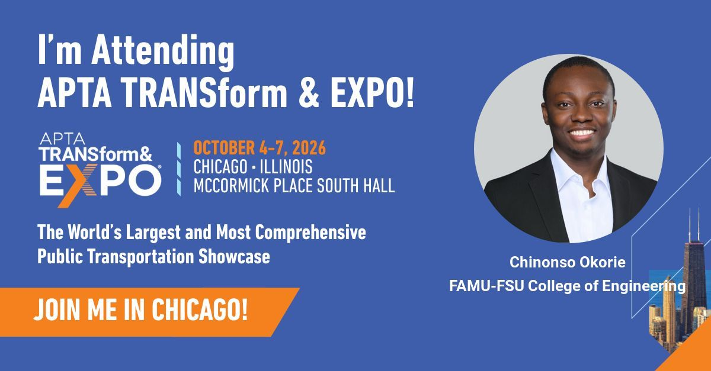
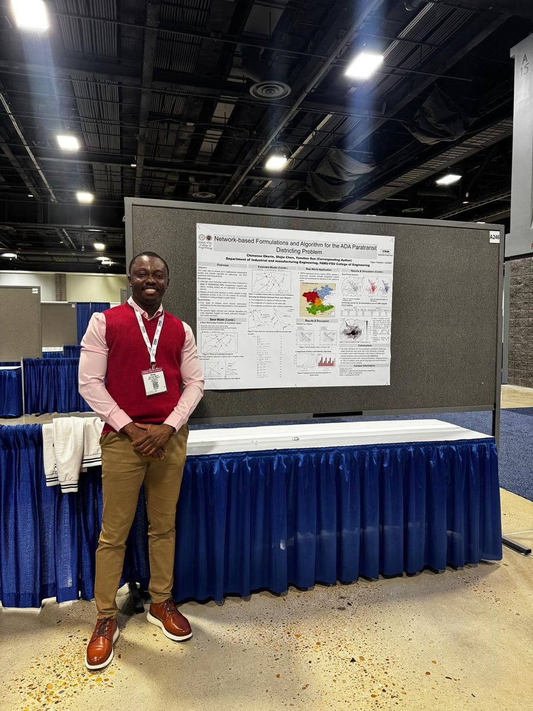
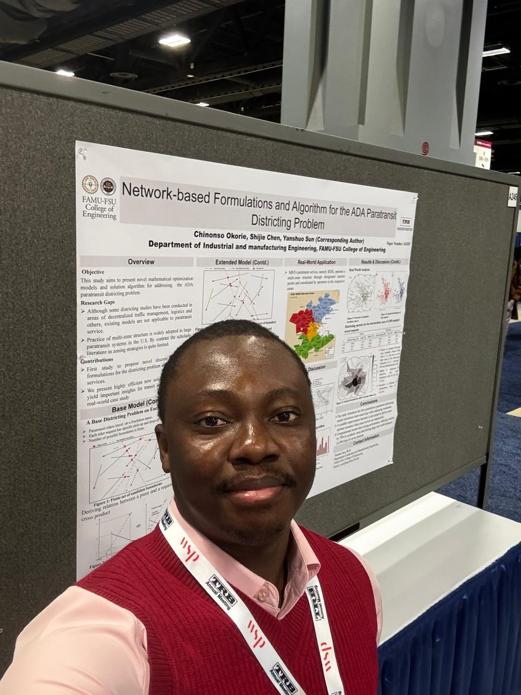
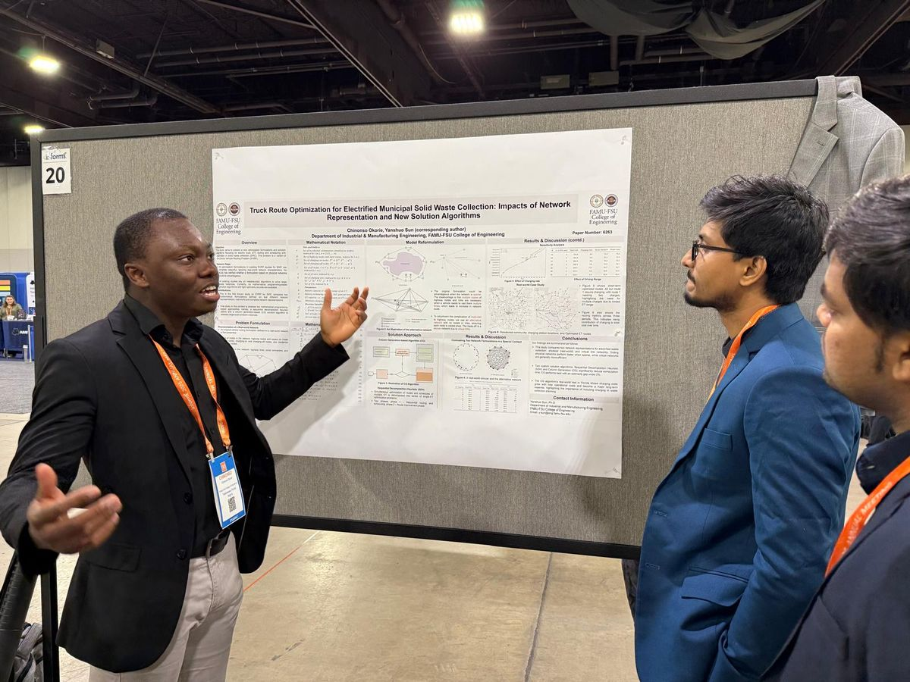
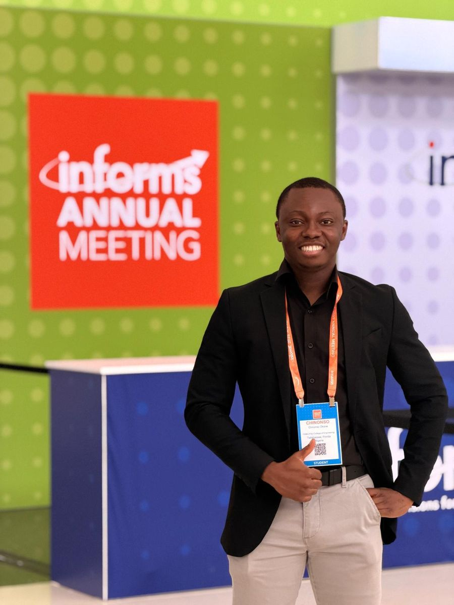
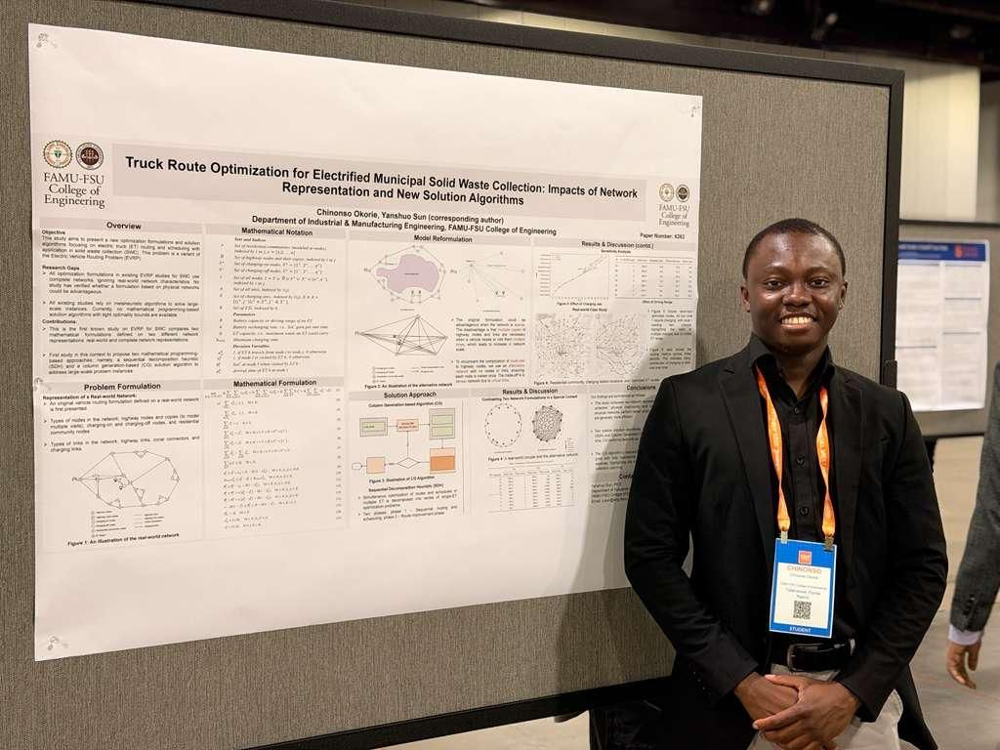
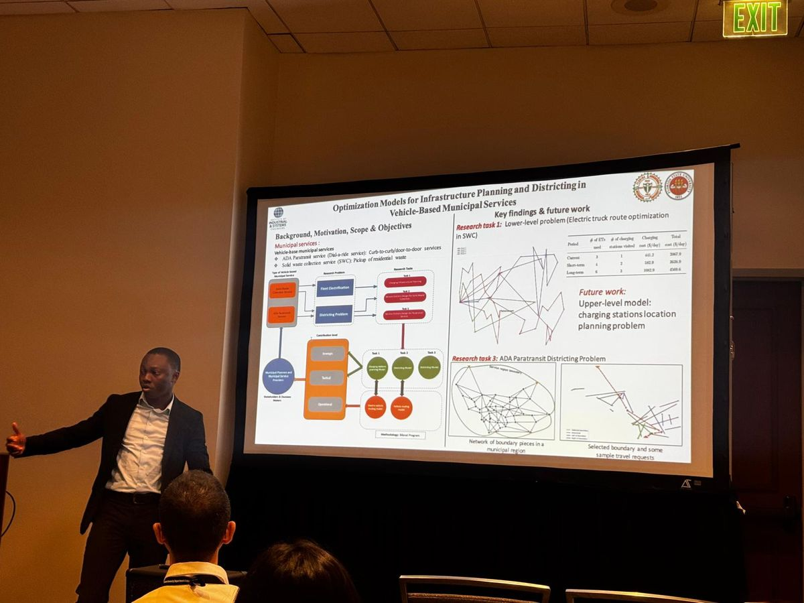
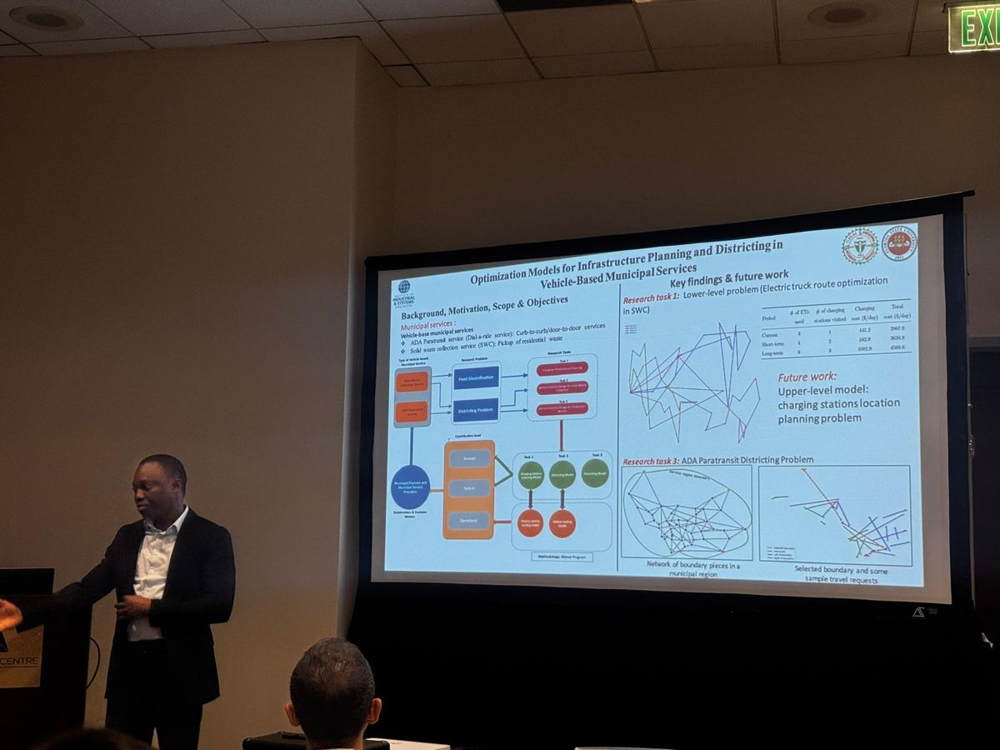
All presentations
TRB 2026105th Annual Meeting · Washington, D.C.
Optimization models for the ADA paratransit districting problemwith S. Chen and Y. Sun
BTR 2026Bridging Transportation Researchers · Online
Network-based formulations and solution algorithm for paratransit districtingwith Y. Sun
INFORMS 2025Annual Meeting · Atlanta, GA
Truck route optimization for electric trucks in solid waste collectionwith Y. Sun
INFORMS 2025Annual Meeting · Atlanta, GA
Network-based formulations and algorithm for the ADA paratransit districting problemwith S. Chen and Y. Sun
IISE 2025Doctoral Colloquium · Atlanta, GA
Optimization models for charging infrastructure planning and districting in solid waste collectionSelected participant
BTR 2025Bridging Transportation Researchers · Online
Route optimization for electric trucks in solid waste collection: impacts of network representations and new solution algorithmswith Y. Sun
Honors & awards
$7,500
American Public Transportation Association (APTA) · 2026–27
$5,000
Florida Public Transportation Association · 2026–27
$5,000
FAMU-FSU College of Engineering · 2026–27
$2,000
FAMU-FSU College of Engineering · 2023–24
$1,250
FAMU-FSU College of Engineering · 2024–25
$500
FAMU-FSU College of Engineering
Leadership & service
Peer review for the transportation research community, and leadership roles in graduate student organizations at Florida A&M University.
Aug 2025 – present
National Academies of Sciences, Engineering, and Medicine
Jun 2025 – present
Reviewing manuscripts for technical soundness and methodological rigor
Oct 2024 – present
FAMU Graduate Assistants United · chapter representative to the UFF Contract Enforcement Committee
Sep 2023 – May 2025
African Graduate Students Association, Florida A&M University
Memberships
News & press
FAMU-FSU College of EngineeringOct 13, 2026
“Solid waste collection is a vital municipal service, but it is also a significant source of emissions and air pollution.”
≤2% from optimal90% less solve timePlans to 2045
Read article →FAMU-FSU College of EngineeringOct 13, 2026
“Up to now, transit agencies have largely relied on intuition or pre-existing boundaries like city limits.”
4,300 daily rides tested<7 min vs. up to 3 hours
Read article →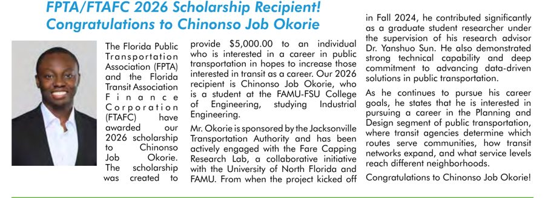
More features
Let's connect
I'm glad to talk about transportation optimization, municipal fleet electrification, transit analytics, or a role on your team.
chinonso1.okorie@famu.edu